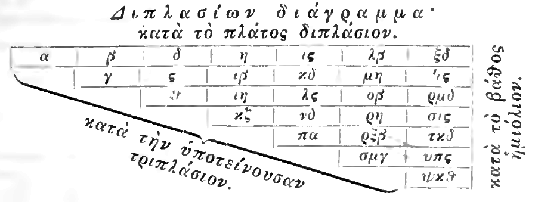

Chapter 3: Multiples Generating Corresponding Superparticular Ratios — Greek (Hoche 1866)¶
Ἀριθμητικὴ Εἰσαγωγή, Book II, Ch. 3 (ed. R. Hoche, Teubner, 1866)
γ. Ἅπας πολλαπλάσιος τοσούτων ἐπιμορίων ἡγήσεται λόγων ἀντιπαρωνύμων αὐτῷ, ὁπόστος ἂν αὐτὸς ὥν τυγχάνῃ ἀπὸ μονάδος, οὔτε δὲ πλειόνων οὔτε ἐλαττόνων οὐδεμιᾷ μηχανῇ. διπλάσιοι μὲν οὖν ἡμιολίους φύσουσιν, ὁ πρῶτος ἕνα, ὁ δεύτερος δύο, ὁ τρίτος τρεῖς, ὁ τέταρτος τέσσαρας, ὁ πέμπτος πέντε, ὁ ἕκτος ἕξ καὶ οὔτε πλείονας οὔτε ἐλάττονας, ἀλλʼ ἐξ ἀνάγκης πάσης, ὅταν τὴν σύμμετρον ποσότητα ἀπολάβωσιν οἱ γεννηθέντες ἐπιμόριοι ἰσάριθμοι γενόμενοι τοῖς γεννήσασι πολλαπλασίοις, τότε δὴ ἔκ τινος δαιμονίας μηχανῆς εὑρίσκεται ὁ πάντας περαίνων ἀριθμὸς ἀνεπίδεκτος ὢν φύσει ἐκείνου. τοῦ μορίου, καθʼ ὃ προέκοπτον οἱ ἐπιμόριοι· ἀπὸ δὲ τῶν τριπλασίων οἱ ἐπίτριτοι πάντες προκόψουσι καὶ αὐτοὶ ἰσάριθμοι τοῖς γεννῶσιν οἱ γεννώμενοι καὶ περαιούμενοί γε μετὰ τὴν αὐτάρκειαν τῆς προκοπῆς εἰς ἀριθμοὺς μὴ ἐπιδεκτικοὺς τρίτου· καὶ ἐπιτέταρτοι δὲ κατὰ ταυτὸν ἐκ τετραπλασίων ἐπικορύφωσιν λαμβάνοντες ἀριθμὸν μετὰ τὴν αὐτάρκη πρόβασιν τετάρτου μὴ ἐπιδεκτικόν. οἷον διπλασίων μὲν ὑποδείγματος χάριν ἰσαρίθμους γεννώντων ἡμιολίους ὁ μὲν ἄνω στίχος ἔσται πολλαπλασίων ὁ πρῶτος
f. 0095 · p. 77

α, β, δ, η, ιϛ, λβ, ξδ·
ἐπεὶ δὲ πρῶτός ἐστιν ὁ β μετὰ τὴν μονάδα, ἑνὸς κατάρξει οὗτος ἡμιολίου μόνου τοῦ γ, ὅςτις ἡμίσους ἐπιδεκτικὸς οὐκ ἔστιν, ἵνα καὶ ἄλλος αὐτοῦ γένηται ἡμιόλιος· ὁ πρῶτος ἄρα διπλάσιος ἑνὸς μόνου γεννητικός ἐστιν ἡμιολίου, ὁ δὲ δεύτερος ὁ δ δυεῖν γεννητικὸς ἡμιολίων, αὐτοῦ μὲν γὰρ ὁ Ϛ, τοῦ δὲ Ϛ ὁ θ, τοῦ δὲ θ οὐκ ἔστιν ἄλλος, ἥμισυ γὰρ οὐκ ἔχει· ὁ δὲ η τρίτος ὢν διπλάσιος τριῶν ἡμιολίων ἔσται πατήρ, ἑνὸς μὲν τοῦ ιβ πρὸς αὐτόν, ἑτέρου δὲ τοῦ ιη πρὸς τὸν ιβ, τρίτου δὲ τοῦ κζ πρὸς τὸν ιη, τετάρτου δὲ οὐκέτι διὰ τὸ καθολικόν, ὁ γὰρ κζ ἥμισυ οὐκέτι ἐπιδέχεται· ὁ δὲ ιϚ τέταρτος ὢν διπλάσιος τεσσάρων ἡγήσεται ἡμιολίων, τοῦ τε κδ, τοῦ λϚ, τοῦ νδ καὶ τοῦ πα τελευταίου, ἵνα ἰσάριθμοι ἀνάγκαίως ὦσι τοῖς γεννήσασιν, ὁ γὰρ πα οὐκέτι ἥμισυ φύσει ἐπιδέχεται· καὶ τοῦτο μέχρις ἀπείρου προιών ἀνάλογον εὑρήσεις. οἷον ὑποδείξεως ἕνεκα γεγράφθω οὕτως διπλασίου διάγραμμα
α |
β |
δ |
η |
ιϛ |
λβ |
ξδ |
γ |
ϛ |
ιβ |
κδ |
μη |
ϟϛ |
|
θ |
ιη |
λϛ |
οβ |
ρμδ |
||
κζ |
νδ |
ρη |
σιϛ |
|||
πα |
ρξβ |
τκδ |
||||
σμγ |
υπϛ |
|||||
ψκθ |